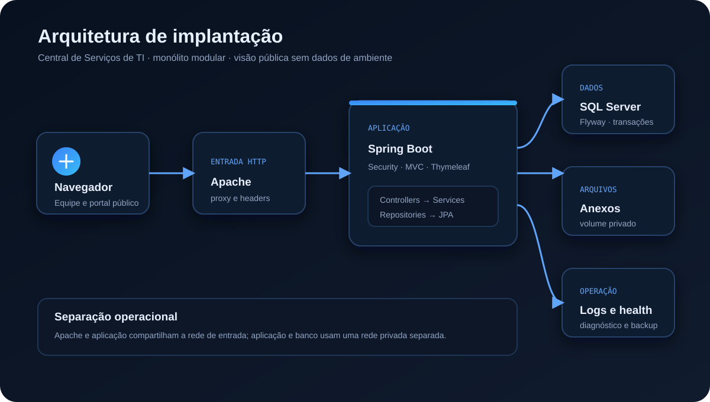
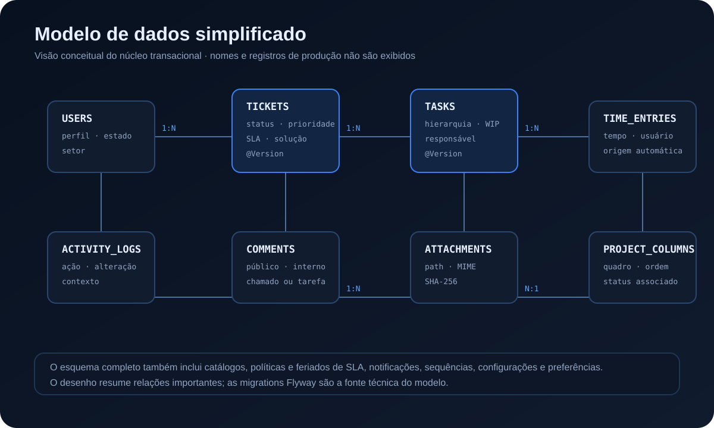
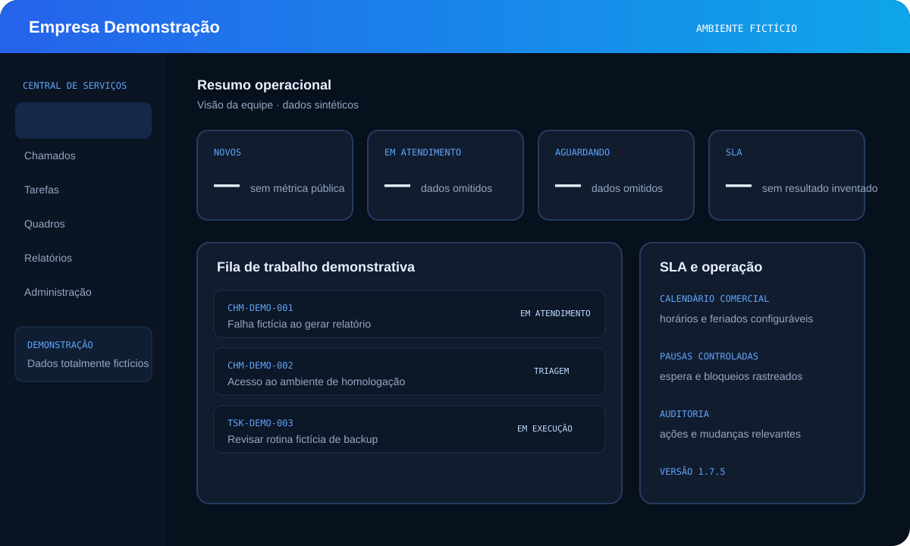
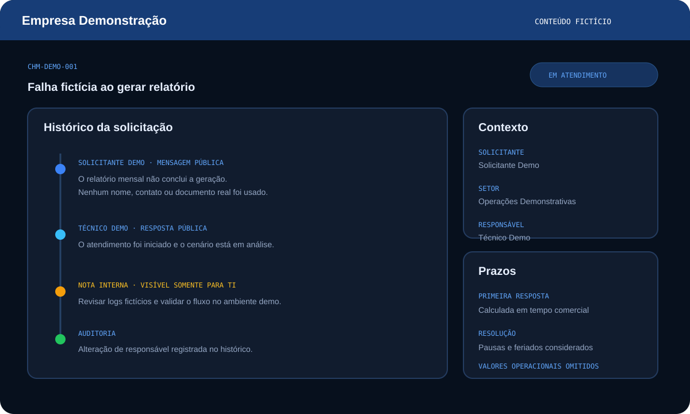
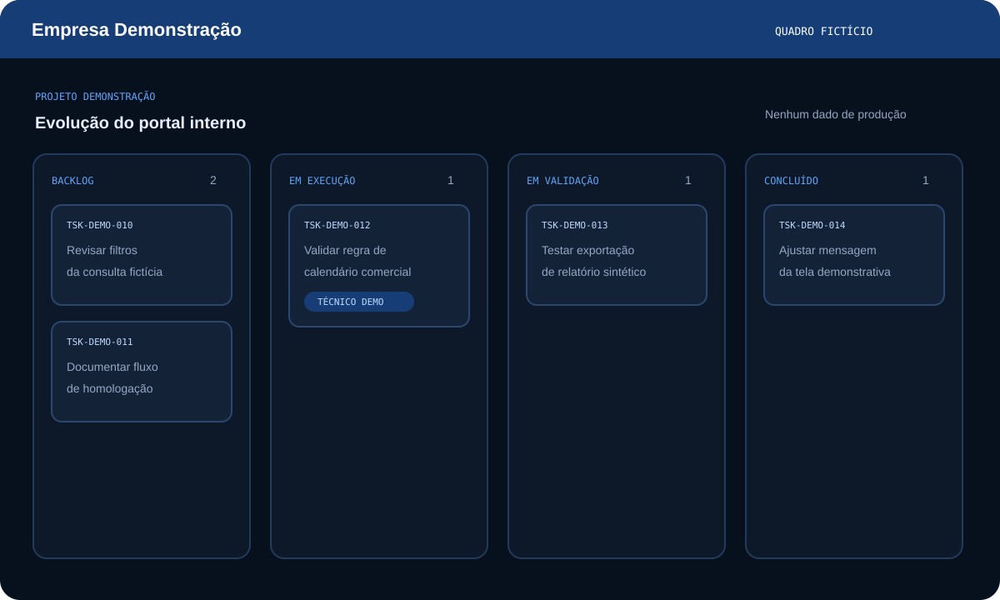

Solicitante
Abre, acompanha e responde sem acessar notas internas ou tarefas da equipe.
Uma aplicação Java/Spring para organizar chamados, tarefas, SLA e operação — do formulário inicial ao histórico auditável e à implantação no Windows.
Este estudo não expõe a empresa nem dados operacionais. Todas as telas abaixo são composições fictícias com a identidade Empresa Demonstração.
Uma solicitação de TI precisa conservar contexto durante todo o atendimento: quem pediu, o que já foi tentado, qual é o próximo passo, quem assumiu a execução e como o prazo foi calculado. Quando essas informações ficam espalhadas, a equipe perde rastreabilidade e o solicitante perde visibilidade.
A solução centraliza esse ciclo sem misturar o que é público com o trabalho interno da equipe. O mesmo sistema atende usuários autenticados, abertura sem conta, triagem, execução técnica, gestão de catálogos e operação administrativa.
Abre, acompanha e responde sem acessar notas internas ou tarefas da equipe.
Faz triagem, assume trabalho, divide tarefas, registra tempo e controla prioridades.
Configura perfis, catálogos, SLA, retenção, armazenamento e auditoria.
A escolha prioriza transações locais, implantação reproduzível e menos pontos de falha para o contexto atual.

Rotas, formulários e respostas HTML, JSON e CSV.
Transações, autorização, workflow, SLA e auditoria.
JPA, specifications, locks e consultas específicas.
Evolução versionada de tabelas, constraints e índices.
A numeração anual usa bloqueio transacional no SQL Server. A tomada de tarefa livre usa atualização condicional. Chamados e tarefas usam versionamento otimista para não aceitar sobrescritas silenciosas.
Primeira resposta e resolução consideram expediente configurável, fins de semana, feriados e pausas controladas. O tempo aguardando o solicitante é acompanhado separadamente.
Spring Security protege rotas e sessão, enquanto os serviços validam acesso a chamado, tarefa e anexo. Arquivos ficam fora dos assets públicos, com nome aleatório, checksum e caminho normalizado.
As migrations registram a evolução do esquema, incluindo integridade referencial, índices, SLA, portal público, quadros de projeto e preferências.
Docker Compose, Apache, volumes, health checks, scripts de backup e diagnóstico e um instalador NSIS reduzem etapas manuais no ambiente Windows.
O desenho mostra o núcleo. Catálogos e configurações foram omitidos para manter a leitura.

Sem capturas da produção, nomes reais, contatos, protocolos ou métricas operacionais.



Os testes cobrem regras de serviço e fluxos web com Spring Security, MockMvc e persistência. Entre os cenários estão chamados, contas, portal público, SLA, anexos, WIP, relatórios e artefatos de infraestrutura.
O número de testes é uma contagem verificável da versão analisada, não um percentual de cobertura. O pipeline padrão usa H2; o teste de integração com SQL Server existe em um fluxo separado e é um ponto de evolução.
Posso explicar o fluxo de SLA, a estratégia de concorrência, a segurança de anexos ou como a aplicação foi empacotada para operação local.